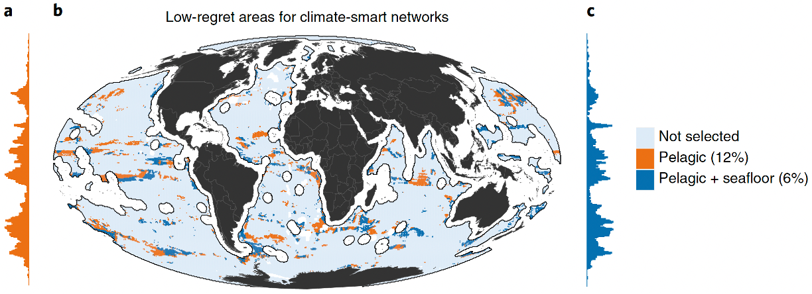
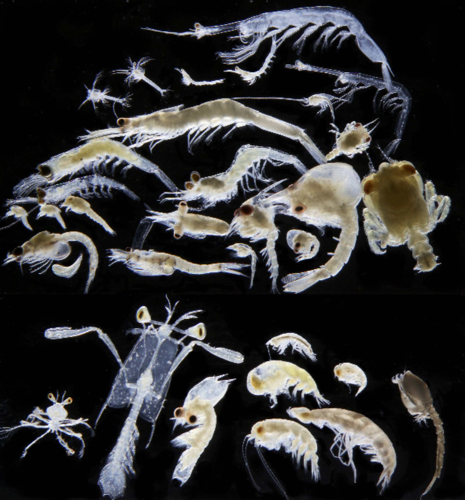
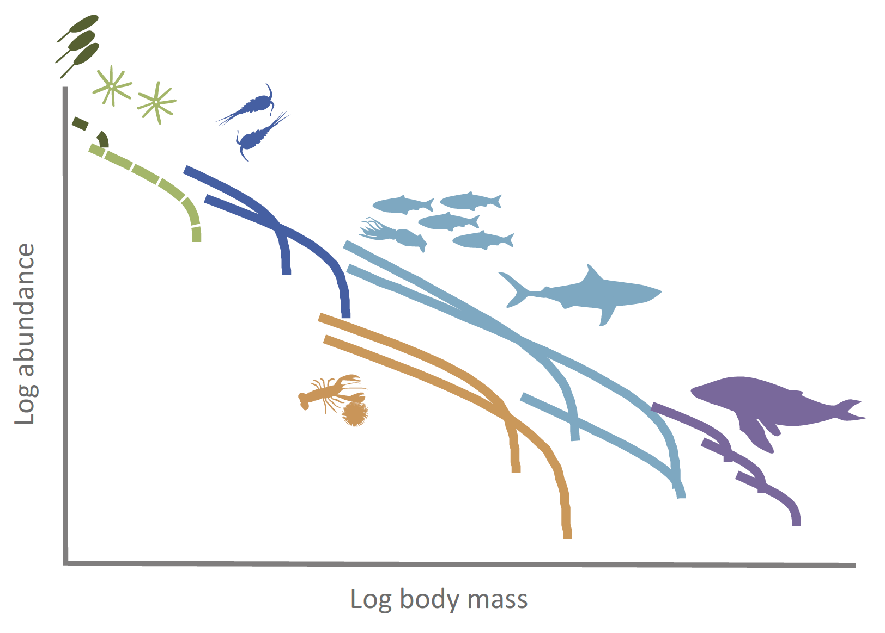

Research
Conservation and protected areas

The ocean is under pressure — from overfishing, climate change, pollution, habitat loss, and invasive species. To protect marine biodiversity, countries are rapidly expanding networks of marine protected areas (MPAs), aiming for 30% ocean coverage by 2030 (the “30x30” target). But where should these reserves go?
Our lab tackles this question using quantitative, climate-smart conservation planning. We combine biodiversity mapping, oceanographic data, and advanced modelling to design MPAs that:
- Conserve species and ecosystems into the future
- Optimise multipe use (e.g., fishing, shipping, mining, renewable energy, aquaculture) through ocean zoning
- Enhance climate resilience and connectivity of protected areas
- Provide maximum fisheries benefits to communities
- Minimise conflict between conservation and industries
- Account for the ocean’s complex 3D structure
- Use our methodological developments to increase the protection of marine biodiversity and improve ocean management
- Develop real-time ocean shiny apps for stake-holder engagement
This work uses supercomputing, real-time decision tools (Shiny apps), and includes multiple-use planning and ecosystem service trade-offs. It’s applied, computational, and directly supports policy and marine management. Examples of our real-world applications can be found here.
Tracking climate change using plankton

Plankton are sentinels of climate change. Phytoplankton produce half the oxygen on Earth and support marine food webs, while zooplankton transfer carbon to fish, whales, and seabirds, and drive key biogeochemical cycles. But in a rapidly changing climate, how are these critical organisms responding?
Our lab uses decades of high-resolution plankton data from the Australian Integrated Marine Observing System (IMOS) run by CSIRO, historical records, and global data sets to uncover how climate variability and change—including marine heatwaves, El Niño, warming, and acidification—is reshaping plankton abundance, distribution, species composition, and behaviour.
We apply cutting-edge statistical modelling (e.g., GLMMs, GAMMs, time-series analysis) to investigate:
- Shifts in plankton distribution, abundance, timing and community structure
- Zooplankton responses to warming and acidification
- Emerging trends in gelatinous zooplankton (jellyfish and salps) in response to global change
- Changes in zooplankton diel vertical migration in response to cliamte change, with implications for predator-prey interactions and the biological carbon pump
- Ecosystem health indicators and assess trends over time to inform marine assessments and national reporting.
Learn more: 👉 Australian Plankton Survey 👉 Plankton Factsheet 👉 State of Australia’s Oceans 👉 Zooplankton Image Gallery
Dynamic ecosystem modelling

To manage marine biodiversity and fisheries sustainably in a changing climate, we need powerful tools to forecast how ecosystems will respond. Our lab develops dynamic ecosystem models that simulate life in the ocean—from bacteria to whales—based on core biological processes like feeding, growth, and predation. Central to our approach are size spectrum models, which track energy flow and carbon cycling across all body sizes and trophic levels.
A major innovation in our work is resolving zooplankton, the critical but often overlooked link between phytoplankton and fish. Zooplankton not only sustain food webs but also drive the biological carbon pump—a process that draws carbon from the atmosphere and stores it in the deep sea. Yet most models simplify or omit their role.
We are advancing ZooMSS (Zooplankton Model of Size Spectra), a global, process-based model designed to better represent zooplankton diversity, temperature sensitivity, and carbon dynamics. By refining how zooplankton are modelled—including their impact on fisheries and carbon sequestration—we aim to answer key questions:
- How will climate change alter zooplankton communities and their role in ocean carbon storage?
- How does the temperature sensitivity of different zooplankton groups and processes alter carbon cycling in the ocean?
- Why are there so many tuna in nutrient-poor tropical waters?
- What can improved zooplankton modelling tell us about future fish stocks and climate mitigation?
ZooMSS is an ecosystem model based on partial differential equations, is run on a supercomputer, and is the only global fisheries-ecosystem model that focuses on better representing zooplankton feeding relationships.